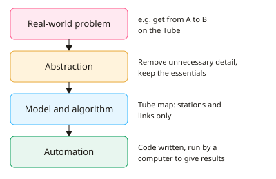

A-level Computer Science Year 12 · Topic 9
Computational thinking
Computational thinking is the set of mental tools computer scientists use to tackle problems.
We will use abstraction and automation, think ahead about inputs, outputs and preconditions, and think procedurally and logically.
Then we think concurrently, use divide and conquer, backtracking and heuristics, and explore data mining, performance modelling and visualisation.
- 6 subtopics
- 166 questions
- Free: 9.1 notes and 10 questions
In this topic
- 9.1Abstraction and automationFree below · 28 questions
- 9.2Thinking ahead: inputs, outputs, preconditions, caching and reusable componentsOpen in Full Marks · 25 questions
- 9.3Thinking procedurally and logically: decomposition, sequencing and decision pointsOpen in Full Marks · 30 questions
- 9.4Thinking concurrently and parallel processingOpen in Full Marks · 30 questions
- 9.5Problem recognition and solving techniques: divide and conquer, backtracking and heuristicsOpen in Full Marks · 30 questions
- 9.6Data mining, performance modelling, pipelining and visualisationOpen in Full Marks · 23 questions
9.1 · Free notes
Abstraction and automation

Key points
- Abstraction means removing unnecessary detail (or hiding complexity) so that you focus only on the essential features of a problem. It makes a problem easier to understand, solve and model.
- Representational abstraction is a simplified representation of reality with irrelevant detail removed, e.g. the London Underground map shows stations and connections but not true distances or geography.
- Abstraction by generalisation (categorisation) groups items with common characteristics into a hierarchy, e.g. Car, Lorry and Motorbike generalised to Vehicle with shared attributes such as wheels and speed.
- Procedural (functional) abstraction hides how a computation is carried out and replaces specific values with parameters. The programmer only needs to know what the subroutine does, not how, e.g. calling sort(list).
- Data abstraction hides how data is represented or stored. A stack or queue is used through operations such as push and pop, whether it is built from an array or a linked list (information hiding).
- Problem abstraction (problem reduction) removes details until the problem is one that has already been solved, so a known algorithm can be reused, e.g. scheduling reduced to graph colouring.
- Layers of abstraction let each layer hide the detail of those below it, e.g. a high-level language hides machine code, and the application layer in a network hides how bits are signalled.
- Automation means putting an abstracted model into action: designing algorithms, choosing data structures, writing code, and having a computer execute it to solve the problem.
- Abstraction comes first (decide what the model contains) and automation follows (implement and run the model). Computer simulations such as weather forecasting automate abstracted models of the real world.
- Benefits of abstraction: it reduces complexity, speeds up development, allows reuse and makes maintenance easier. Always say which detail is removed and why it is not needed.
- Do not confuse abstraction (hiding or removing detail) with decomposition (splitting a problem into smaller parts). Both are tools of computational thinking but they are different.
In more detail
- Worked abstraction: a weather app shows "70% chance of rain", hiding the huge atmospheric model behind it.
- Worked representational abstraction: a chess program stores the board as an 8 × 8 array and ignores what the pieces are made of.
- Worked generalisation: one sortList routine works for names, scores or dates, because it only needs to compare items.
- Worked procedural abstraction: you call area(r) without needing to know how it is calculated; a stack is a data abstraction with push and pop.
- Worked automation: an airline turns its seating rules into an algorithm, so seats are allocated automatically.
Practice
Abstraction and automation: 10 questions
Pick an answer to check it, or open the answer for the explanation.
1. Which statement best defines abstraction in computational thinking?
- Storing data so it can be accessed more quickly
- Splitting a problem into smaller sub-problems
- Converting a flowchart directly into machine code
- Removing unnecessary detail to focus on the essential features
Show answer
D: Removing unnecessary detail to focus on the essential features. Abstraction hides or removes detail that is not needed so the essential features remain. Splitting a problem is decomposition; storing data for speed is caching.
2. The London Underground map shows stations and lines but not true distances. Why is it a good abstraction?
- It automatically plans journeys for passengers
- It is drawn to an exact scale
- It shows every street above each station
- It keeps the detail a traveller needs and omits the rest
Show answer
D: It keeps the detail a traveller needs and omits the rest. The map removes irrelevant detail such as geography and distance and keeps stations and connections, which is what journey planning needs.
3. A programmer calls sort(names) without knowing which sorting algorithm is used. Which type of abstraction is this?
- Data abstraction
- Caching
- Procedural abstraction
- Automation
Show answer
C: Procedural abstraction. Procedural (functional) abstraction hides how a computation is carried out. The programmer only needs to know what the subroutine does and what parameters it takes.
4. A stack is used through push and pop, and the user does not know whether it is stored as an array or a linked list. This is an example of:
- Data abstraction
- Automation
- Iteration
- Problem reduction
Show answer
A: Data abstraction. Data abstraction hides how a data structure is represented. Users interact only through the defined operations, so the implementation can change without affecting them.
5. Which description best matches automation in computational thinking?
- Checking that user input is valid
- Implementing a model as an algorithm in code that a computer executes
- Removing irrelevant detail from a problem
- Breaking a problem into modules
Show answer
B: Implementing a model as an algorithm in code that a computer executes. Automation puts an abstracted model into action: algorithms and data structures are coded and run on a computer to solve the problem.
6. Why is abstraction normally carried out before automation?
- Abstraction is only needed after testing
- Computers cannot run programs until they are abstracted
- Automation removes the need for algorithms
- The model must be defined before it can be coded and run
Show answer
D: The model must be defined before it can be coded and run. You must first decide what the model contains (abstraction). Only then can you design algorithms and code to execute it (automation).
7. Car, Lorry and Motorbike are grouped as Vehicle, with common attributes such as wheels and speed. This is abstraction by:
- Generalisation
- Data hiding
- Caching
- Sequencing
Show answer
A: Generalisation. Grouping items by shared characteristics into a more general category is abstraction by generalisation (categorisation).
8. A programmer replaces the expression 5 * 3 with the subroutine rectangle_area(w, h). What principle is being applied?
- Reducing the problem to a known one
- Replacing specific values with parameters
- Hiding the data structure used
- Storing results for reuse
Show answer
B: Replacing specific values with parameters. Procedural abstraction generalises a calculation by replacing fixed values with parameters, so the same subroutine works for any width and height.
9. Which statement about abstraction is correct?
- It reduces complexity by hiding detail that is not needed
- It makes a model contain more detail than reality
- It is only used when designing hardware
- It removes the need to write any algorithm
Show answer
A: It reduces complexity by hiding detail that is not needed. Abstraction reduces complexity by hiding or removing irrelevant detail. It applies to software and models, and algorithms are still needed for automation.
10. A web developer uses HTTP without knowing how bits are sent as electrical signals. Which idea does this show?
- Caching of repeated requests
- Validation of user input
- Layers of abstraction hide lower-level detail
- Decomposition into parallel tasks
Show answer
C: Layers of abstraction hide lower-level detail. Each network layer provides a service to the layer above and hides how it is done, so the developer need not know the lower-level detail.
Keep going in Full Marks
Full Marks has 28 questions on Abstraction and automation (18 more than here), set out in practice levels. You also get notes and 3D models for all 6 subtopics of Computational thinking, plus games, timed exams and past papers.